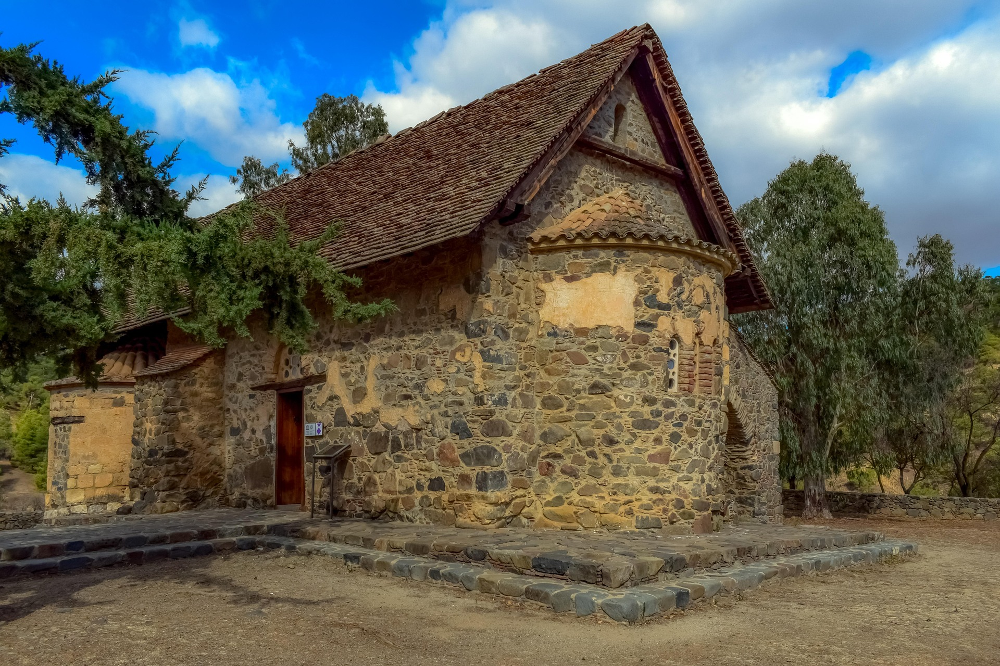
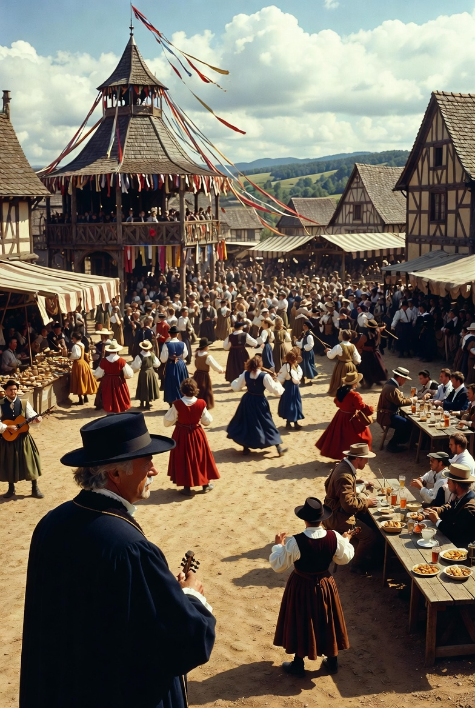
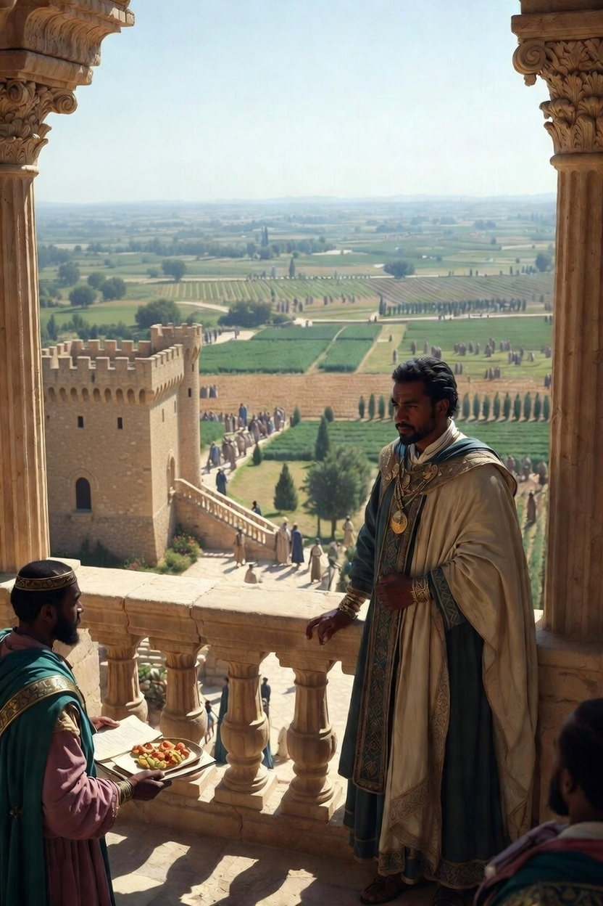
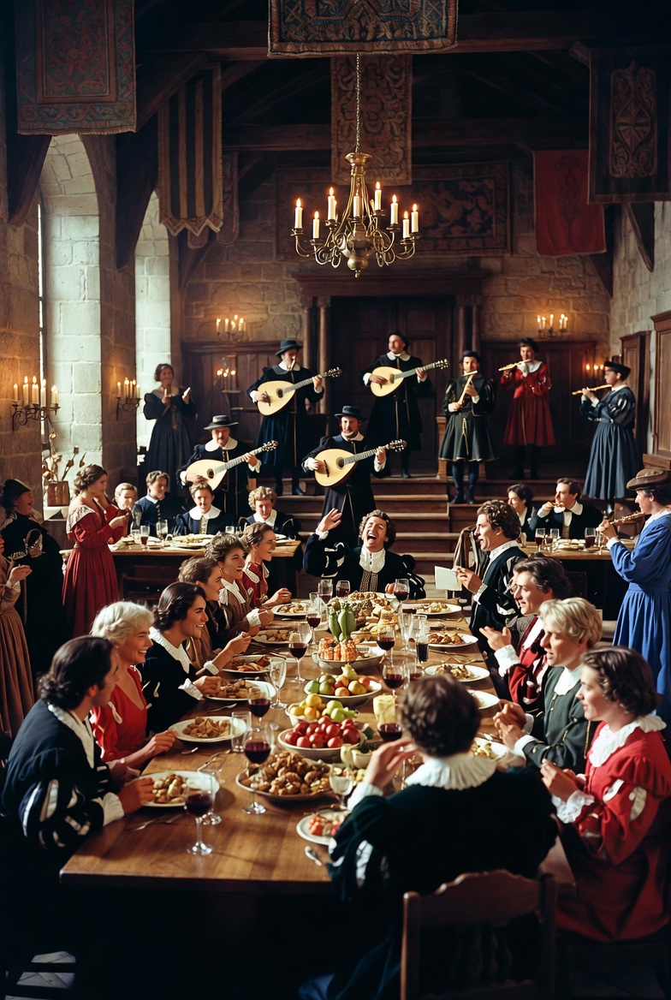

Cím1

Reggel felkeltem a kakas kukorékolására. A szolgálók behozták a ruháim. Általában díszes ruhát viselek, de most csak egy egyszerűbb gúnyát öltöttem magamra. A ruháim általában posztóból, bársonyból és állati prémekből készültek. Mindig csizmát hordok, amit egy réz sarkantyú díszít. Kedvenc ruhaszíneim a sötétkék és a bordó. Miután felöltöztem, kinéztem, hogy minden rendben van-e a földeken. A ház, ahol élek, nagy és díszes. A család többi tagjának is bőven van hely. Az udvaron a kutyám fogadott. Megsimogattam, és megkértem az egyik szolgálót, hogy vigye el sétálni. A reggeli után megnéztem a műhelyeimet, hogy hogy állnak.
Cím2

Van egy kovácsom, aki készíti a szebbnél szebb kardokat és páncélokat. Jelenleg csak két műhelyem van, de tervezek a jövőben többet is. Miután ellenőriztem a műhelyt, elindultam lóháton a falu felé. A falu nagy része parasztházakból áll. Van egy templom a főtéren. Én a piacra mentem. Leszálltam a lóról, és vásároltam egy-két dolgot. A ruhámból mindenki tudja, hogy én egy nemes vagyok. A parasztok ismernek már, mert én birtoklom a földet, amin ők dolgoznak. Egy nagy, díszes épületben élek. Van egy kis kastélyos hangulata, de nem teljesen az. A házon belül vannak szolgálóim, illetve egy kertészem meg egy házmesterem. A kert nagyon nagy, díszes angolkert stílusú. Van szökőkút, padok, meg zöldséges ültetvények is. A házon belül van egy külön szobám irodának, és külön egy hálószoba.
Cím3

Nemesként nem kell tartanom attól, hogy milyen adókat vet ki a király a népre, mert nekem és a többi nemesnek immunitása van az adókkal szemben. Bár adókat nem kell fizetnem az uralkodónak, de kötelezettségem az van bőven. Ha a király háborúba vonul, nekem is mennem kell
Cím4

Egy nagyon nehéz napon vagyok túl. Több jobbágyam is meghalt. Valami járvány terjed manapság a környező falukban és úgy néz ki ez a szóbeszéd igaz, mert már nálunk is felbukkant. Kicsit tartok tőle. Nem szeretnék idő elött ily módon eltávozni. Ha már szólít a halál inkább dicső módon a háborúban adnám az életemet királyomért.
Cím5

Egyik jobbágyam ma tiszteletlen volt velem. Bár ez nem tolerált, de kivételesen megbocsáltottam neki, mivel nehéz napokon van túl, mint ahogy mindannyiunk. A járvány és a háború senkinek sem kegyelmezett, de mostmár egy jobb helyen vannak az Úrral. Nem lenne szerencsés a kevés jobbágyam közül mégegyet elveszíteni. Meghalna, ki dolgozna helyette? És végülis egy alkalom amikor tiszteletlen volt nem akkora vétek, mint visszautasítani a robotot.
Cím6
A minap találkoztam egyik szomszédos terület földesúrjával. Egy hatalmas lakodalmat csaptunk annak örömére hogy a lánya megházasodik. Ennél szebb ünnep nincs is.
Cím7

Reggel kimentem a földre, és megkönnyebbültem, hogy már robotolnak a földön a jobbágyok, aztán megettem a tegnapról megmaradt sülteket. Aztán elmentem a királyhoz átvenni a csillogó páncélomért, ami megjött a kovácstól. Utána elmentem kifizetni a tanítókat, akik a gyerekeimet tanítják, Karcsit és Marcsit. Hazafelé vettem nekik frissen sült pogácsát. Bár nem az enyém a világ, nekem a király parancsol (sajnos), és én tartozom neki katonai szolgálattal. Ha háború van, mennem kell vele harcolni, és halálomig védeni. Ünnepekkor együtt van a család, és főz a nagyi. Múltkor pulykát ettünk burgonyával és húslevest.
Cím8

Felbontottam a pincében egy jó kis bort, és megittuk a fiammal. Szabadidőmet elmélkedéssel töltöm és a jövő megfürkészésével.Most éppen a király szülinapjára az aratóünnepre és az egyházi ünnepekre készülünk . Ilyenkor a család és a szolgák együtt rakják rendbe a házat és fincsi étellel várjuk az eseményt. Az ünnep ugy zajlik le hogy Imádsággal kezdjük utána lakomát ülünk, borral, hússal és jó szóval az asztalnál. estére ének és vidámság lesz, a gondokat meg elfelejtjük. Azért fontos nekünk mert az ünnep emlékeztet a dolgunkra hűség a királyhoz, gondoskodás a családról. törvény és becsület szerit cselekszünk . Szokásaink: lakoma előtt együtt iátkozunk és a bort sosem isszuk meg egyedül. A család együtt eszik együtt bulizik és bajban is egymás mellett állunk.